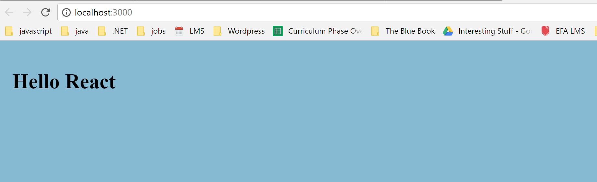

SASS Setup
Better to set up SASS early than wait. This swerves us away from jumping straight into React Fundamentals, but it's just wiser and better to take the time up front to get our environment set up.
Adding a CSS Preprocessor (Sass, Less etc.)
Install the command-line interface for Sass:
npm install --save node-sass-chokidar
Change package.json
In package.json, add the following lines to scripts:
"scripts": {
+ "build-css": "node-sass-chokidar --include-path ./src --include-path ./node_modules src/ -o src/",
+ "watch-css": "npm run build-css && node-sass-chokidar --include-path ./src --include-path ./node_modules src/ -o src/ --watch --recursive",
"start": "react-scripts start",
"build": "react-scripts build",
"test": "react-scripts test --env=jsdom",
SCSS File Set up
Follow the steps closely below. If you get lost, refer to the source code for this branch and go through a second/third time:
- In
index.js, delete the import statement forindex.css. - Delete the
index.cssfile. In
App.js, delete all of the code in the file and replace it with this code:import React, { Component } from 'react'; import './App.css'; class App extends Component { render() { return ( <div> <h1>Hello React</h1> </div> ); } } export default App;- Keep the file, but delete all the code from the
App.css. We will leave the file empty for now. - In the /src folder create an
App.scssfile. - In the /styles folder create two files:
_body.scssand_variables.scss. In the newly created
styles/_body.scssfile, add the following code:/**************************** Body Section ****************************/ body { padding: 15px; background-color: $red; }Copy and paste the following starter code to
styles/_variables.scss. Note that these are the Eleven Fifty colors(you can use your own later)/****************** Variables ******************/ /*EFA Color pallete*/ $red: #D9514E; $orange: #f79569; $yellow: #F6D57A; $green: #8acfba; $blue: #86bad3; $blue-green: #9AD0D5; $purple: #A992BC; $brown: #725b4d; $gray: #53565A; $black: #000 !default;In
src/App.scssadd the following imports:@import "styles/variables.scss"; @import "styles/body.scss";Double check your structure. You should see have the following structure inside the /src folder:
└── src └── assets └── components └── constants └── styles └── _body.scss └── _variables.scss └── App.css └── App.js └── App.scss └── App.test.js └── index.js └── logo.svg └── registerServiceWorker.js
Compiling the SCSS
Now we'll run watch-css to see changes in our SCSS files. Run the following command:
npm run watch-css
You should see the following on your screen:

Just to test our code, let's change the background-color to $blue:
/****************************
Body Section
****************************/
body {
padding: 15px;
background-color: $blue;
color: white;
font: Belleza;
}
It should recompile automatically and render the following:

Go aheadh and change the background back to white when you Also, it is important to note that this code is being added to our App.css file, and all of the CSS for the app will be pipelining there.

Compiling when Running
Having to run this way will get obnoxious. We need to fix our app so that it compiles the SCSS files and runs the watch-css automatically with npm start:
npm install --save npm-run-all
Then we can change start and build scripts to include the CSS preprocessor commands:
"scripts": {
"build-css": "node-sass-chokidar src/ -o src/",
"watch-css": "npm run build-css && node-sass-chokidar src/ -o src/ --watch --recursive",
- "start": "react-scripts start",
- "build": "react-scripts build",
+ "start-js": "react-scripts start",
+ "start": "npm-run-all -p watch-css start-js",
+ "build-js": "react-scripts build",
+ "build": "npm-run-all build-css build-js",
"test": "react-scripts test --env=jsdom",
"eject": "react-scripts eject"
}
Now when we run npm start, it will run the app and bring our SCSS files into our App.css file. Try the following:
- Run
npm start. - Change the background color to $green while running in the _body.scss file.
- Check the browser to make sure the color changes.
- Check the App.css file and see that the background color is now green.